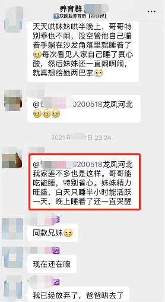
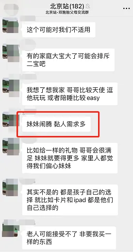
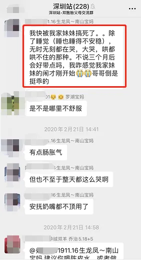
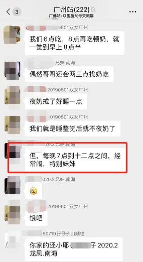
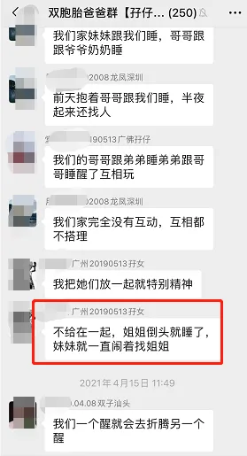
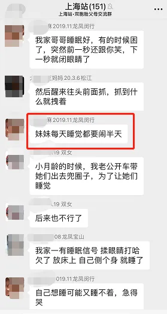
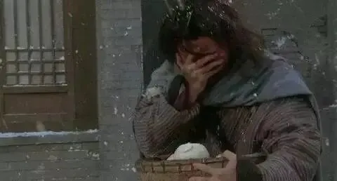
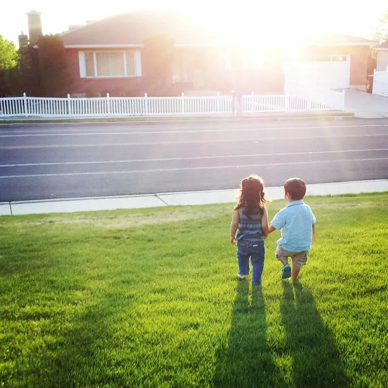

孖仔帮
公众号ID：twinsbang
关注
文|龙凤胎乔治佩奇妈妈
网图|侵删
#先插播一则群通知#：第12期双胞胎跳蚤市场群已开放，公众号输入“赶集12”，扫码即可入群。
【帮主】圆圈妈妈：这是孖仔帮双胎专栏【孖妈来了】的第16篇文章，是一位龙凤胎妈妈的投稿，家有哥哥妹妹一对，目前正处于可怕的两岁，
看完这位龙凤胎妈妈的分享，我再也不相信什么一胎搞定俩人生大赢家。
我承认，我曾经的确很羡慕生龙凤胎（其实是羡慕有一个女儿），但是后面才发现，养一个娃很难，养两个娃更难，同时养两个不同性别的娃更是难上加难！
须知道，幸福的背后是汗水。
在我们的世界里，有一些貌似的人生大赢家，我们常常很羡慕这些人，但多数人只是看到他们获得成功的喜悦，有多少人能够看到他们努力的艰辛？
【龙凤胎佩奇乔治妈妈】：我们家是一对龙凤胎，哥哥和妹妹，小名乔治和佩奇，因为我和我老公都姓朱，哈哈，懒得想名字就干脆这样叫了。
其实按出生顺序，应该是姐姐和弟弟，但可能受传统思想的影响，我们都希望男孩子嘛得有担当，所以就把后出生的那个孩子当哥哥，将来可以保护妹妹。
儿女双全，一胎搞定，幸福是必然的，但苦恼也是双倍的。觉得龙凤胎特别难带，两个性别不同，从小胃口、作息、脾性，兴趣爱好就完全不一样。
比如哥哥一天吃奶1000 ml，妹妹吃一半就吐，而且越大越不一样。两小孩的性别差异导致的一些列养育和教育问题，真让我们全家人都操碎了心。
我知道男孩和女孩是会有差别，没想到这差别竟然隔着十万八千里。
个性特征
哥哥，比较内向，性格文静，温顺、听话、乖巧懂事，从小就是个让人很省心的孩子，他吃得好，睡得香，很享受生活。待他渐渐长大，几乎跟每个人都能融洽相处。身边能有这么个孩子，实在是件幸事。我时常感恩，上帝给我一个天使宝宝！
可是妹妹呢，正好相反，她生来就是大姐头的范儿，奈何被我们当妹妹看待了。但依然不能掩盖她御姐的光芒，性格泼辣，会和男孩子一争高低，总想让别人听命于自己。
她从小就是个让人极为头疼的混世小魔王，喝奶吃饭总是一件很遭罪的事情，睡觉也往往让人头疼不已，哼哼唧唧，一个晚上起来好几次，玩也不好好玩，玩具乱扔乱敲乱摔乱打。
现在才2岁，她简直折腾个没停没歇，随便看到什么她都要去摸一摸，什么都能被她搞得一塌糊涂，什么玩具到她手上都可能被她弄坏。相比哥哥的温润如玉，她简直就是狂野粗暴。
我时常纳闷，哎，传说中的【女孩比男孩听话】，【女孩比男孩容易养】在哪里呢？
好在妹妹只是性格偏豪爽了点，其他方面都有女孩子的样子，不然我真的很怀疑她是不是在抗议，反对我们当初违背天意，让本来是姐姐的她当妹妹了。
经常爬楼看双胞胎的社群，也有很多妈妈投诉这一届的双胞胎妹妹实在太吵，太闹了！
左右滑动查看更多>>>
呵呵，原来如此，我也就放心多了。
成长发育
果然，女孩是要比男孩要成熟早一些，但恰恰是这个早，且他们又是同岁，倒显得哥哥很弱鸡。
妹妹才11个月，就能松开我们的手，颤巍巍地走上几步，很快就学会了走路，说话、自己上厕所、吃饭穿衣服都比哥哥快很多。
她不仅表现在开口说话上，就连字词都比哥哥会的多，大动作发展也比哥哥强，特别体现在打架上，她永远都占优势。
因此，每当两兄妹打起来时，我们全家人都很同情哥哥，都默默地为哥哥祈祷，希望妹妹手下留情的同时也希望哥哥好歹也躲一下，还一下手。
哥哥呢？他各方面发展都很慢，那速度，那动作，一如既往地缓缓的，慢慢的，憨憨的，呆呆的...特别让人捉急。
妹妹已经走得稳稳当当了，他还在爬行状态；妹妹已经会唱小曲了，他还在咿咿呀呀地喊爸爸妈妈。妹妹一个拳头打过来，他也不懂还手，连躲闪都不会，只会哭，任妹妹咬啊，打啊，踢啊...
日常生活
除以上性格和发育的差异，还有一些生活中的不便。
#哄睡#
把哥哥扔床上聊会天讲会故事，然后让他滚一滚就睡了；妹妹就特别难搞，要穿上自己喜欢的睡衣，带上她心爱的独角兽，要把所有爱的毛绒玩具摆整齐，还要把她抱在怀里讲她选好的几本书，关灯前还有要亲亲抱抱搂着睡，而且以上都必须指定爸爸来操作，别人不可以替代。
#洗澡#
小的时候没关系，把两人丢进澡盆一起洗，大了就不行，他们才一岁半就已经开始研究对方身体的不同之处，甚至抓着对方的生殖器玩，可把他们的奶奶尴尬地满地找洞钻，只好分开洗。
#玩具#
妹妹虽然个性像男孩子，但是兴趣爱好也跟所有女娃一样，喜欢芭比娃娃，喜欢所有粉色的东西，因此我们的玩具全都要一式两份，分男款女款，但这依然不影响妹妹要抢哥哥的玩具，时常把哥哥惹哭。
#生活用品#
也有很多不一样，比如袜子，妹妹要粉色，哥哥要蓝色，最后就是经常粉色一只，蓝色一只，都凑不成一双。每次找他们的袜子配一双犹如大海捞针，好想全部买清一色的白色袜子，奈何说服不了倔强的妹妹。
#睡觉#
现在他们还睡在同一张小床上，自从上次妹妹睡觉一个翻身把哥哥踹到流鼻血，我们马上就把分房分床睡提上日程，但问题也来了，买上下铺还是隔开两个小房间，又是个很纠结的事情。
#读绘本#
哥哥喜欢看有关汽车，飞机，以及各种交通工具或武器的书；妹妹则偏爱人物情节丰富的图画类书籍。因此给他们兄妹俩读绘本相当困难，要么两人拿一本书争个你死我活，要么一个在看，另一个在闹或者暴走，反正我们娘仨从来没有正儿八经地读过一本书。
#亲子关系#
妹妹粘爸爸多一些，对爸爸是小迷妹一样的欣赏和崇拜，对我却不十分友善，仿佛怕我抢走她的爸爸，搞得我像第三者似的；好在哥哥对我是百分百的专一，天天说妈妈我爱你，我受伤的心灵在哥哥那里得到极大的安慰。
作为龙凤胎的妈妈，我真的太难了，每次别人羡慕的眼光说，真好，儿女双全一次搞定！我心里就有万千羊驼奔腾而过。
龙凤胎的难带系数是所有双胞胎中最难的，因为两个性别不同，女孩和男孩的需求有时就差十万八千里，不能按同一个套路来养，看一些育儿书都要比其他家长做更多的功课。
有两个儿子的，只看《养育男孩》，有两个女儿的，看《养育女孩》，我呢？我两本都要看，关键是看完，还云里雾里到底哪个是哪个。
为此，我经常找我老公抱怨，如果有的选，我真的宁愿选同性别的双胞胎。
两儿或两女，多好啊，一刀切，军事化管理，流水线操作。1条裤子，轮着穿，混着穿，合着穿，怎么穿都行，简单省事易操作。
搁我这一对龙凤胎，还得具体问题具体分析。终究是男女有别，男孩和女孩之间会因为喜好，兴趣，生理发育，智力能力等，乃至后面青春期的变化，和各种经历不同，必然会有隔阂。
每当我这么一说，老公就说我太焦虑了，孩子才2岁，就开始担心青春期。
我苦笑，我自己是独生子女，从小就很渴望有个姐姐或妹妹，却从来不希望有个哥哥或弟弟。双胞胎的手足关系本身就很亲密，但是同性间的手足亲密度是异性手足达不到的。
如果还有的选，我宁愿选择分两次生。
起码我出月子了还可以像单胎妈妈那样去做什么产康，练瑜伽，做美容，而不是关在房里暗无天日地喂奶，一个喂完再接着另外一个；
起码我不用请保姆，不要老人家帮忙带就行，而不是连请保姆都要请2个，双方老人家都要过来打下手，最后还是被两个娃累得人仰马翻；
起码我能好好享受与孩子独处的时光，及时地回应孩子的需求，而不是被两个孩子当个物品一样抢来抢去，最后还因为无法兼顾两个而愧疚不已。
养育龙凤胎，真的是一半海水，一半火焰。
还好我和宝爸都很喜欢孩子，心态上都很放得开，就算当龙凤胎的妈咪是个坑，我也要把这个坑坐穿。就算他们是上帝派来存心折磨我的两个大反派，看着两张萌哒哒的小脸，软糯糯的小奶音，实在讨厌不起来，反而愈加喜爱。
大概这就是传说中的，三观跟着五官走。
三观尽毁也罢了，谁让咱上辈子拯救了银河系。
龙凤胎的爸爸妈妈们，挺住！
-END-
作者/双胞胎乔治佩奇妈妈
排版/圆圈妈妈
写手招募
如果你是爱分享的双胞胎爸爸或妈妈
欢迎投稿至孖仔帮【双胎专栏】
分享出你和双胞胎的成长故事
添加小助手微信sgguy-com
备注“投稿”
今日互动话题
#来PK吧，你觉得哪种组合的双胞胎最难养？#
评论区聊一聊呗！
微信公众号：孖仔帮
ID : twinsbang
专注双胞胎孕育，养育，教育经验分享
扫码关注我们
点一下你会更好看耶








